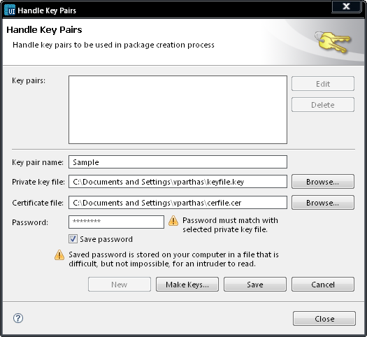

Defining New Key Pairs
You can use existing keys and certificates, or you can let Carbide.ui
create them for you.
Defining new key pairs using existing keys and certificates
- Select Tools -> Handle Key
Pairs. The Key pairs window
opens.
- Enter a name for the key
pair.
- Click Browse
next to the Private
key file field to
browse existing
private keys.
- Select a .key or a .pem
file.
- Click Browse
next to the Certificate
file field to
browse existing
certificates.
- Select a .cer or a .p7c
file.
- Enter a password for the key
pair.
- Mark the Save password
checkbox if you want to save your password.
- Click Save.

Figure:
Handle Key Pairs